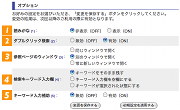
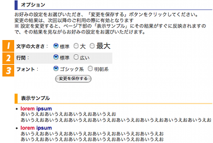

| 使い方 | 凡例 | 「英辞郎」、「英辞郎 on the WEB」について | FAQ | 更新情報 | 誤植レポート | |
「英辞郎 on the WEB」の便利な機能：目次
「英辞郎 on the WEB」の便利な機能
「英辞郎 on the WEB」では、検索体験を向上する機能が用意されています。
-
スペルチェッカー（英和検索時のみ）
検索キーワードをタイプミスすると、検索結果が 0 件になってしまう場合があります。そういったときに、スペルチェッカーがその綴りに近い別の見出し語候補を提案します（何も提案されない場合もあります）。表示された提案をクリックすると、自動的にその提案を検索条件に再検索を実行します。
例：- （ conprehension と検索） ⇒
この中にお探しの単語はありますか？ :
comprehension
- （ conprehension と検索） ⇒
-
変化形リンク（英和検索時のみ）
動詞や形容詞、副詞を検索したときに、その変化形（動詞の原形・三人称単数現在形・過去形・過去分詞形、形容詞・副詞の原級・比較級・最大級）を検索候補として提案します。表示された提案をクリックすると、自動的にその提案を検索条件に再検索を実行します。また、名詞を検索した場合にも、その単数形・複数形を検索候補として同様に提案します。
例：- （ write と検索） ⇒ 変化形 : writes , writing , wrote , written
- （ heaviest と検索） ⇒ 変化形 : heavy , heavier
- （ cat と検索） ⇒ 変化形 : 《複》cats
- （ cats と検索） ⇒ 変化形 : 《単》cat
-
イディオム・フレーズリンク（英和検索のみ）
英単語が検索された場合に、その単語を含むイディオムやフレーズを表示します。
各イディオムやフレーズは検索用リンクになっており、クリックするとそのイディオムやフレーズと一致する可能性が高いキーワードで検索することができます。
※ キーワードの文字列パターンは一致していても、指定したイディオムや慣用的な表現を含んでいない項目も検索結果に含まれている可能性があります。
※※「【もっとイディオムを見る】」が表示されている場合は、このリンクをクリックすると、表示されているもの以外の他のイディオムやフレーズのリンクも参照することができます。
例：- （ birth と検索） ⇒ イディオムやフレーズ : give birth to / by birth
-
ユーザ設定：
-
【機能】読みがな・ダブルクリック検索・参照ページのウィンドウ・検索キーワード入力欄・キーワード入力補助
検索キーワード入力欄の右にある 「設定アイコン」（右図、オレンジの吹き出しで示している部分）をクリックすると、「英辞郎 on the WEB」の検索結果ページの読みがな表示のオン・オフの設定を変更したり、ダブルクリック検索や全文ファイルなど参照先のページの表示ウィンドウの変更をするなどの機能面の設定を変更できます。
「設定アイコン」（右図、オレンジの吹き出しで示している部分）をクリックすると、「英辞郎 on the WEB」の検索結果ページの読みがな表示のオン・オフの設定を変更したり、ダブルクリック検索や全文ファイルなど参照先のページの表示ウィンドウの変更をするなどの機能面の設定を変更できます。
 この機能設定の変更画面で設定できるのは、以下の項目です。
-
読みがな（英和検索時のみ対応）：
このオプションが「表示」（ON）のとき、語義中の漢字の語彙に読みがなが表示されます（読みがなデータのない語彙もあります）
・初期設定 = 「非表示」（OFF）
例：
（非表示・OFF の場合）-
write
【自動】
手紙で知らせる、手紙を書いて送る、手紙を書く……（以下略）
-
write
【自動】
手紙｛てがみ｝で知らせる、手紙｛てがみ｝を書いて送る、手紙｛てがみ｝を書く……（以下略）
-
write
-
ダブルクリック検索（英単語のダブルクリック時のみ対応）：
このオプションが「有効」（ON）のとき、検索結果中の英単語をダブルクリックすると、その単語で再検索できます（ワードリンク機能に代わる新機能です）
・初期設定 = 「有効」（ON）
※ 日本語の単語をダブルクリックしても検索はおこないますが、お使いのブラウザによっては、再検索したい文字列が必ずしも再検索されるわけではありませんので、あらかじめご容赦ください
-
参照ページのウィンドウ：
ダブルクリック検索を使ったとき、どのウィンドウで参照先のページを表示するかを選択できます
・初期設定 = 「別のウィンドウで開く」
-
検索キーワード入力欄：
初期設定では、検索結果ページ中の検索キーワード入力欄には、お調べになった検索キーワードがそのまま表示されます。この検索キーワードをクリアして検索キーワード入力欄を空の状態に変更したり、検索キーワードを選択した状態に変更できます
・初期設定 = 「キーワードをそのまま残す」
-
キーワード入力補助：
このオプションが「有効」（ON）のとき、検索キーワード入力欄に文字を入力するたびにその文字列で始まる見出し語候補が更新されながら表示される機能をご利用いただけます
・初期設定 = 「無効」（OFF）
※「キーワード入力補助」については、詳しく紹介したページをご用意しておりますので、そちらをご覧ください。
「初期設定を適用する」ボタンをクリックすると、各オプションは先述の「初期設定」の状態になります。
-
読みがな（英和検索時のみ対応）：
-
【表示】文字サイズ・行間・フォント
検索キーワード入力欄の右にある「設定アイコン」をクリックし、表示された機能設定画面にある「表示設定の変更」と書かれたリンク（右図、オレンジの吹き出しで示している部分）をクリックすると、「英辞郎 on the WEB」の検索結果の文字サイズを大きくしたり、行間を広く設定したり、フォント（文字種）を変更するなどの表示状の設定を変更できます。
 この表示設定の変更画面で設定できるのは、以下の項目です。
-
文字の大きさ：
このオプションで「大」、「最大」を選択すると、検索結果の文字を標準の文字サイズよりも大きく表示できます。お好みの文字サイズをお選びください
-
行間：
このオプションで「広い」を選択すると、検索結果の行間を標準の行間よりも広く表示できます。文字サイズを「最大」や「大」に設定する場合には、「広い」を選択した方が読みやすくなる場合があります
-
フォント：
検索結果の標準フォント（書体）は「ゴシック系」ですが、「明朝系」を選択して書体を変更できます
※ Internet Explorer をお使いの場合は、「明朝系」を選択した場合、和文の文字列は「明朝系」で表示されません
お好みの設定ができたところで「変更を保存する」ボタンをクリックしてください。次回の検索から、その設定で「英辞郎 on the WEB」をご利用いただけます。
-
文字の大きさ：


-
【機能】読みがな・ダブルクリック検索・参照ページのウィンドウ・検索キーワード入力欄・キーワード入力補助
-
全文表示
収録された見出し語のうちの一部には、例文横に 全文表示 というアイコンを表示するものが存在します。これをクリックすると、その例文を含んだ例文テキスト全てを参照できます。
全文表示 というアイコンを表示するものが存在します。これをクリックすると、その例文を含んだ例文テキスト全てを参照できます。
オリジナル記事等の外部ファイルへのリンクが表示される例文もあります。
※ リンク先の URL の変更などの事情により、情報を表示できない場合もあります。あらかじめご了承ください。
-
レター文例
「英辞郎 on the WEB」には、Eメールや手紙の文例も多く収録されていますが、以下のリンクから、これらををまとめて閲覧することができます。以下の表の「分類」（題名、頭語……など）のリンクをクリックしてください。
分類 例 題名 「商品発送のお知らせ」など 頭語 「カスタマーサービス御中」など 前文＜ビジネス用＞ 「当社製品に対する関心をお持ちいただき、誠にありがとうございます」など 前文＜パーソナル用＞ 「ご無沙汰しております」など 前文＜その他＞ 「あなたのアドバイスが必要です」など 末文 「お返事をお待ちしております」など 結語 Sincerely など
-
ショートカットキー
「英辞郎 on the WEB」では、マウスを使わずにキーボード操作のみでできる操作があります。-
キーワード入力欄に移る：
「英辞郎 on the WEB」のキーワード入力欄に移動することができるショートカットキーです。
- Windows（Internet Explorer）の場合： Alt + E
- Windows（Firefox、Google Chrome）の場合： Alt + Shift + E
- Mac OS（Firefox）の場合： control + E
- Mac OS（Safari、Chrome）の場合： control + option + E
-
前・次ページに移動する：
「英辞郎 on the WEB」では、検索に該当する見出し語が50件を超えると、検索結果が複数のページに区切られます。
その際に、前ページ・次ページへ移動するショートカットキーです。-
Windows の場合：
Alt + Shift + → で、次のページAlt + Shift + ← で、前のページ
-
Mac OS の場合：
option + shift + → で、次のページoption + shift + ← で、前のページ
に、移ることができます。
-
Windows の場合：
-
キーワード入力欄に移る：